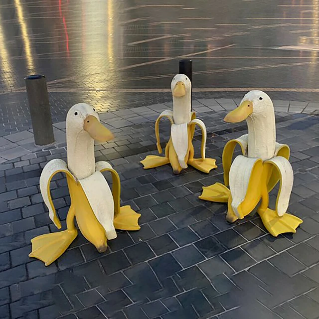

SOBRE
A festa junina é uma celebração tradicional no Brasil e no CCM República Oriental Uruguai, realizada no mês de julho em homenagem aos santos católicos São João, Santo Antônio e São Pedro. A festa foi marcada por comidas típicas, danças de quadrilha, músicas e decorações coloridas.

COMIDAS
- Crepe
- Pastel
- Bolo
- Pipoca
- Quentão
TRADIÇÕES
A festa junina do CCM República Oriental Uruguai é conhecida por suas tradições, como as comidas, decoração, vestimentas e, principalmente a quadrilha.
A quadrilha contou com apresentações de várias turmas e dos professores, com diversas músicas. Um destaque especial foi a quadrilha do terceirão, que apresentou uma coreografia totalmente original, criada do zero.
BRINCADEIRAS
- Pescaria
- Jogo da argola
- Correio elegante
- Boca do palhaço
- Roleta
- Cadeia
GALERIA
Fotos